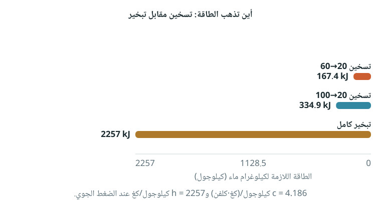

كم نحتاج من الطاقة لتسخين الماء وتبخيره؟
Boiling water costs six times more than heating it
عند الضغط الجوي القياسي، يحتاج تسخين كيلوغرام من الماء من 20 إلى 100 درجة مئوية إلى نحو 335 كيلوجول، ثم يحتاج تبخيره إلى نحو 2257 كيلوجول إضافية.
الحرارة تُدفع مرتين: مرة لرفع الحرارة (حساسة، تُقاس بميزان الحرارة) ومرة لتغيير الطور (كامنة، لا تُرى في ميزان الحرارة). الماء يتميّز بأن حرارته الكامنة عالية جدًا، وهي سبب أن التبخّر يبرّد بقوة وأن الغليان يستهلك طاقة كبيرة. الخلط بين الاثنين يقود إلى تقديرات خاطئة في الطبخ والتبريد.
كيف تعمل الظاهرة؟
في التسخين تزيد الطاقة حركة الجزيئات فترتفع الحرارة. في الغليان تستهلك الطاقة في كسر الروابط بين الجزيئات ودفعها إلى الطور الغازي، فلا ترتفع الحرارة حتى ينتهي التحوّل. لهذا يبقى الماء على 100 في الضغط الجوي مهما أضفت من نار، ويزداد معدّل التبخّر بدل الحرارة.
العلاقة بالأرقام
التسخين: Q = m·c·ΔT = 1 × 4.186 × 80 = 334.9 كيلوجول. التبخير: Q = m·h = 2257 كيلوجول. النسبة 6.74. أي أن 13% من الطاقة تذهب لرفع الحرارة و87% لتحويل الطور. الطهي في قدر مفتوح يهدر هذه النسبة في البخار بدل أن يستخدمها في الطعام.
مفاهيم متقاربة
الحرارة الكامنة ليست حرارة إضافية تُشعر بالحرارة: ميزان الحرارة يقرأ 100 قبل التبخير وبعده. الفرق يظهر في الكتلة المتبقية فقط. ولهذا يقول المهندس «لا يمكن رفع حرارة الماء المغلي بالنار» وهي عبارة صحيحة داخل طور واحد.
حدود التطبيق
الرقم صحيح عند الضغط الجوي فقط: في قدر الضغط تقلّ الحرارة الكامنة قليلًا وترتفع حرارة الغليان، فيتغيّر الحساب. وفي الخلائط (ملح، سكر) تنخفض الحرارة الكامنة الفعّالة وترتفع نقطة الغليان. والحساب يفترض ماء نقيًا وخسارة صفرية للمحيط.

| الكمية | القيمة | المصدر |
|---|---|---|
| طاقة تسخين كيلوغرام من 20 إلى 100 مئوية | 334.9 kJ | [1] |
| الحرارة الكامنة للتبخّر | 2257 kJ/kg | [2] |
| نسبة طاقة التبخير إلى التسخين | 6.74 مرة | [2] |
| السعة الحرارية النوعية للماء | 4.186 kJ/(kg·K) | [1] |
المصادر
- 1 OpenStax, College Physics 2e — Temperature Change and Heat Capacity — OpenStax. openstax.org/books/college-physics-2e/pages/14-2-temperature-change-and-heat-capacity · اطُّلع عليه 2026-11-16
- 2 OpenStax, College Physics 2e — Phase Change and Latent Heat — OpenStax. openstax.org/books/college-physics-2e/pages/14-3-phase-change-and-latent-heat · اطُّلع عليه 2026-11-16
- 3 OpenStax, College Physics 2e — Heat — OpenStax. openstax.org/books/college-physics-2e/pages/14-1-heat · اطُّلع عليه 2026-11-16
راجعه: مراجعة آلية — ديوان المعرفة (أرقام محسوبة + مصادر متحققة) 2026-11-16 · 2026-11-16 · آخر تحديث 2026-11-17
رجوع إلى المقالات